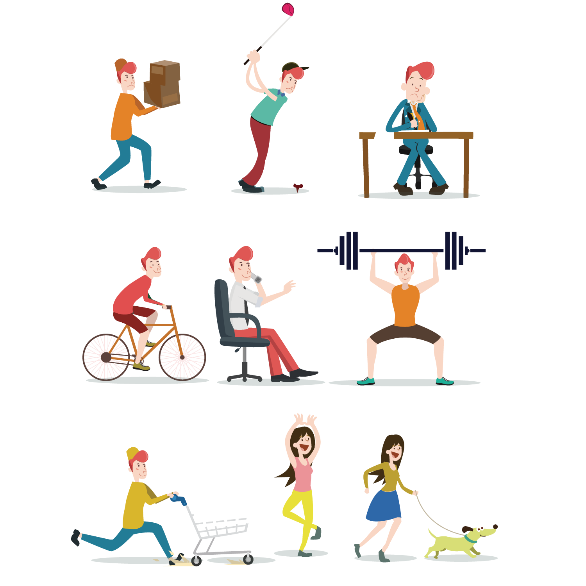

Your genetics and your surroundings.

Your surroundings in the past, up to today, and in the future.
Your genetics came to define you from the year you were born. Genetic and biological material was passed on from your mother and father, who in turn inherited it from their mothers and fathers. This is how the genetic part of you continues, giving you something that helped define you.
But genetics is not everything. Genetics gives you your starting point: what you are born with, the body and mind you are given. Most genetic traits cannot be changed, unless you make a choice and change your so-called state of mind.
This is where your surroundings come in. The environment around you from the day you began to walk, talk and understand what the world meant to you has made the most significant contribution to defining you. This can be changed if you are not satisfied with the way you define yourself today. More on this later.
To sum up, two main things came to define you: genetics, which most of all defines you at birth, and everything around you throughout your upbringing and up to today.

By everything I mean everything you touch and use, the situations you find yourself in, places, or even the many dreams you encounter while sleeping. From childhood through adolescence and into adulthood, you make different choices based on what surrounds you. These choices help determine further choices in your life.
Imagine three main kinds of surroundings:
1.
The people around you: family, friends, the woman in the shop, the teacher, the politician on television. These are your human surroundings.
2.
Then there are object-based surroundings: buildings, books (which also have a human influence, reflecting what people or intelligent life have helped create), the food you eat, the electronic devices you use, and so on.
3.
Finally, there is the natural part of your surroundings, largely determined by where you are at a given moment. It could be a forest, surrounded by trees, or a city, because the city was built in natural surroundings into which people placed human-made objects such as buildings and roads.
Or you might be at home, a mixture of natural elements and human-made objects.
A lot to digest? Or does it make sense?
See also: It Is Fascinating Read the related article
To be continued…